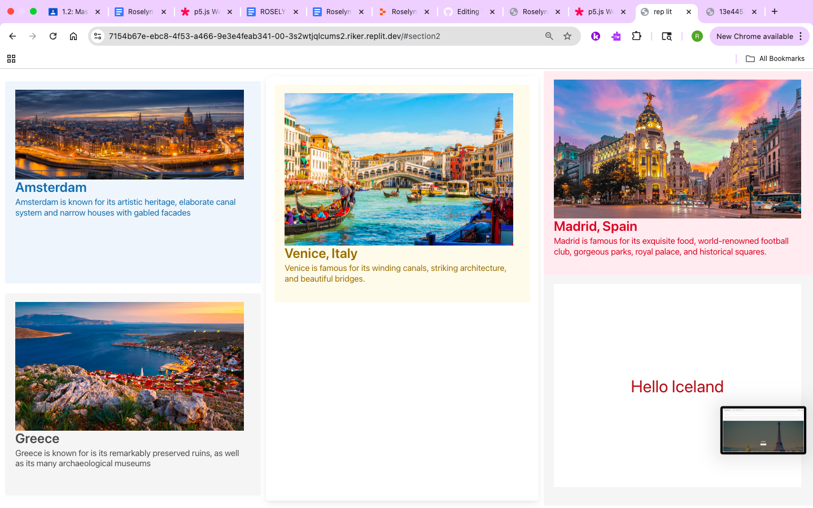

Hey, I'm Roselyn!
Hi! I’m Roselyn. I love traveling, going to the beach, listening to music, and vibing at concerts 🎶🌊✈️. I’ve spent the last few years diving into Computer Science—learning to code, solve problems, and express myself through tech. I plan to study Computer Information Systems and/or Business after high school and hope to one day work in a field where I can blend creativity, technology, and business. I hope to work in project management, product design, or analytics. But most importantly, I definitely plan on traveling the world while I’m at it 🌍✈️.
I complain a lot about CS but I’ve learned that growth comes from showing up. These past three years in Computer Science have shaped me in ways I never expected.
Why I Chose CS
I joined CS because my friend was going into it. I said, why not? Not knowing the journey I was entering. That summer was something else... But here I am, having built websites and solved challenges. It taught me patience, confidence, and how to trust my process.
Explore My Work
Lightbulb Logic Puzzle
Description: A logic-based puzzle where you have to figure out the correct order to light up the bulbs.
Tools: HTML, CSS, JavaScript, Replit
What I Learned: I learned the importance of commenting my code! I used to jump straight into coding without leaving comments because I thought I’d remember everything. But I’d always forget and end up stuck on small problems for hours. With this project, I realized that comments save you time, help organize your thoughts, and make your future self’s life easier. This project taught me that frustration is part of the process—and that writing clean, thoughtful code really matters.
🔗 Live Demo
Travel Planner ✈️

Description: A travel website to help plan your next adventure, complete with locations, experiences, and a mock sign-up.
Tools: HTML, CSS, JavaScript, Replit
What I Learned: I’m honestly the most proud of this project. I remember doubting myself so much while working with Yulenny, since she’s so good at coding. I was scared I’d mess it all up. But learning together was such a great experience. I had to ask my friends for help a *lot*, and I’ll never forget that FaceTime call where Lenny was SO patient with me trying to fix the sign-up button. She ended up solving it, but I learned so much. Looking back, this site is kind of simple, but it reminds me how far I’ve come.
🔗 Live Demo
Emoji Interaction 😊

Description: A creative visual piece where hovering over emojis reveals changing patterns—simple but expressive.
Tools: p5.js (JavaScript Library)
What I Learned: These early projects might seem basic compared to what I can do now, but this was my second mastery check ever, and I was SO proud of it. I finally figured out how to use `ellipse()` and how `mouseX` and `mouseY` could change what’s on the screen. It took me forever to get it right, but once I did, I was so proud. This project reminds me how far I’ve come—from just learning the tools to now building full websites. Growth really shows when you look back.
🔗 View Sketch